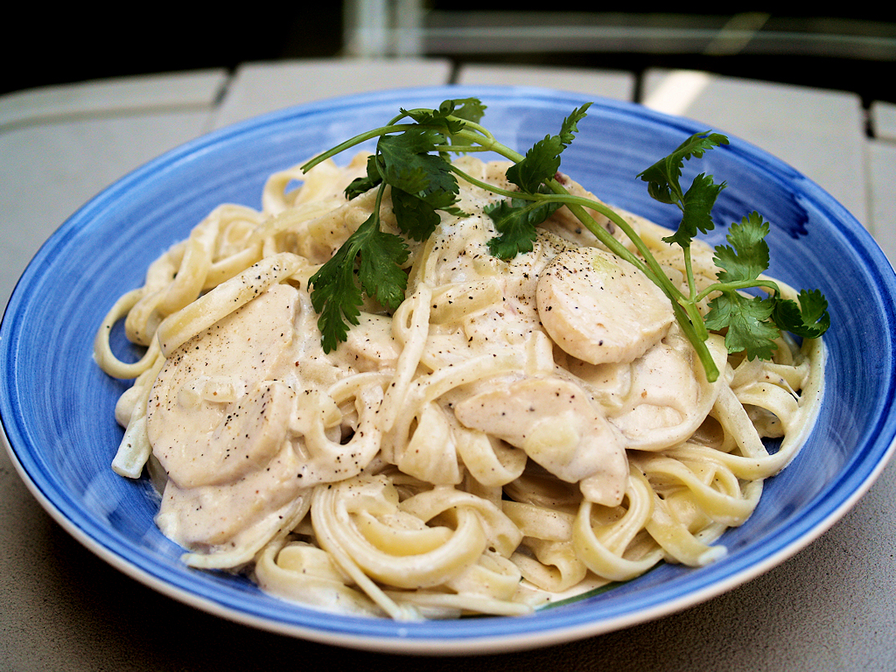

Chicken Alfredo Pasta Home

Description:
Chicken Alfredo pasta is a rich and creamy Italian-American dish that combines tender slices of seasoned chicken
with fettuccine noodles coated in a luscious Alfredo sauce. The sauce, typically made from butter, heavy cream,
and Parmesan cheese, creates a smooth and velvety coating that clings to every strand of pasta. The chicken adds
a savory, hearty element that balances the indulgent creaminess of the sauce, making it both comforting and
satisfying.
Often served with a sprinkle of fresh parsley or extra Parmesan on top, Chicken Alfredo pasta is a classic
comfort food perfect for a cozy dinner. It pairs well with garlic bread or a light side salad, allowing the
creamy, cheesy flavors to shine without being overwhelming. Loved for its simplicity and decadent taste, it’s a
go-to dish for both casual weeknight meals and special occasions.
Ingredients:
- 12 oz fettuccine pasta
- 2 tbsp olive oil
- 2 boneless, skinless chicken breasts (sliced into strips or bite-sized pieces)2 boneless, skinless chicken
breasts (sliced into strips or bite-sized pieces)
- 3 tbsp unsalted butter
- 3 cloves garlic, minced
- 1½ cups heavy cream
- 1 cup freshly grated Parmesan cheese
- Salt and freshly ground black pepper, to taste
- Fresh parsley, chopped (for garnish)
Steps:
- Cook pasta: Boil salted water in a large pot. Cook fettuccine according to package instructions until al
dente. Drain and set aside, reserving about ½ cup pasta water.
- Cook chicken: In a large skillet, heat olive oil over medium-high heat. Season chicken with salt and pepper.
Cook chicken pieces until golden and cooked through, about 5–7 minutes. Remove chicken and set aside.
- Make Alfredo sauce: In the same skillet, reduce heat to medium and melt butter. Add minced garlic and sauté
until fragrant (about 1 minute). Slowly add heavy cream, stirring constantly, and bring to a gentle simmer.
Let it thicken for 3–4 minutes. Stir in Parmesan cheese until melted and sauce is smooth. If sauce gets too
thick, add reserved pasta water a little at a time to reach desired consistency. Season with salt and pepper
to taste.
- Combine: Add cooked chicken and fettuccine to the sauce. Toss gently until everything is well coated and
heated through.
- Serve: Garnish with chopped fresh parsley and extra Parmesan if desired.